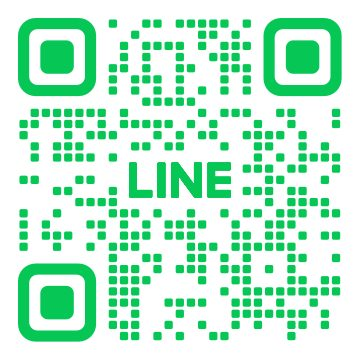
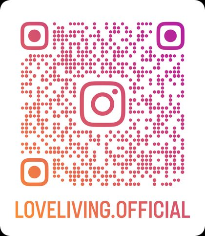

既婚者の方以外であれば、どなたでもご相談いただけます。
18歳以上であれば、年齢の上限はありません。
既婚者の方以外であれば、どなたでもご相談いただけます。
まずは60分、じっくりお話をうかがいます。対面でもオンラインでも構いません。ご相談だけでも大丈夫です。
必要書類をご提出いただき、重要事項・お見合いのルール・お相手のご希望条件を確認します。
ご入会後3日以内にお願いしております。
ご入金の確認後、プロフィールを作成します。お写真もこのタイミングで撮影します。ここから活動スタートです。
IBJ・JBU・NNR の会員様からお探しいただけます。検索の回数にもお申し込みの回数にも制限はありません。
ホテルのラウンジやカフェで行います。オンラインでのお見合いも可能です。
複数の方と同時にお会いいただけます。迷ったときは、その都度ご相談ください。
おひとりに絞ってお付き合いを進めます。ご結婚に向けた具体的なお話もこの時期です。
ご成婚後も、住まいや保険のご相談を承っています。ここで終わりではありません。
書類の取り方が分からない場合も、ご相談ください。一つずつご案内します。
公式LINEにご登録いただくと、無料の恋愛診断をお受けいただけます。
自分の恋愛のクセを知るところから、婚活は変わります。ご相談だけでも大丈夫です。

公式LINE
Instagram